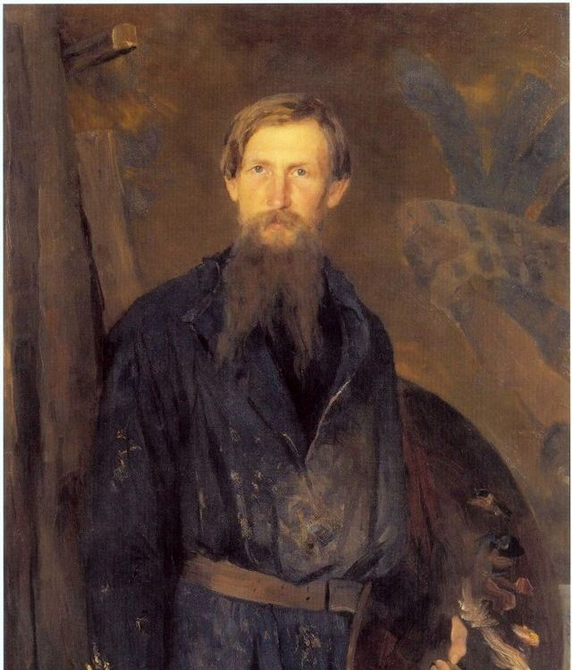
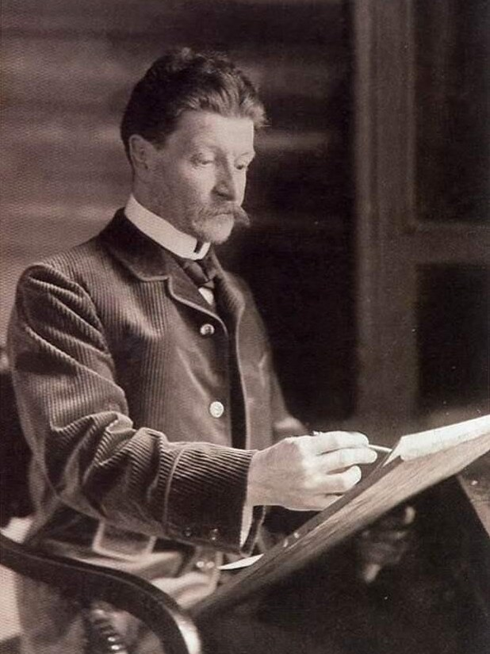
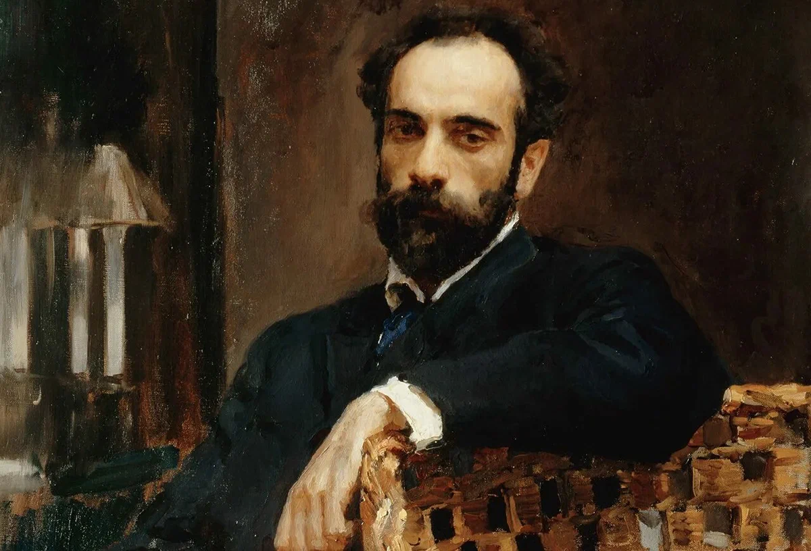

ArtPulse
Великие мастера и их бессмертные творения
Нажмите для прокрутки к галерее
Наша миссия
Сохраняем наследие великих мастеров прошлого и открываем новые таланты современности. ArtPulse — это мост между эпохами, где классическое искусство встречается с цифровыми технологиями.
0
Выдающихся художников
0
Шедевров искусства
0
Видов искусств
Начните путешествие в мир искусства
Откройте для себя сокровища русской живописи и найдите вдохновение
Галерея художников
Иван Хруцкий
Живописец
1810-1885
Нажмите чтобы просмотретьИлья Репин
Реалист
1844-1930
Нажмите чтобы просмотретьКазимир Малевич
Супрематизм
1879-1935
Нажмите чтобы просмотреть

Виктор Васнецов
Историческая живопись
1848-1926
Нажмите чтобы просмотретьАлексей Саврасов
Пейзажист
1830-1897
Нажмите чтобы просмотреть

Михаил Врубель
Символизм
1856-1910
Нажмите чтобы просмотретьВасилий Суриков
Историческая живопись
1848-1916
Нажмите чтобы просмотретьАлександр Иванов
Религиозная живопись
1806-1858
Нажмите чтобы просмотретьФедор Васильев
Пейзажист
1850-1873
Нажмите чтобы просмотретьНиколай Рерих
Символизм
1874-1947
Нажмите чтобы просмотретьИгорь Грабарь
Импрессионизм
1871-1960
Нажмите чтобы просмотретьПавел Корин
Монументалист
1892-1967
Нажмите чтобы просмотретьКонстантин Коровин
Импрессионизм
1861-1939
Нажмите чтобы просмотретьМихаил Нестеров
Религиозная живопись
1862-1942
Нажмите чтобы просмотреть
Борис Кустодиев
Живописец
1878-1927
Нажмите чтобы просмотретьРоберт Фальк
Постимпрессионизм
1886-1958
Нажмите чтобы просмотреть

Исаак Левитан
Пейзажист
1860-1900
Нажмите чтобы просмотреть